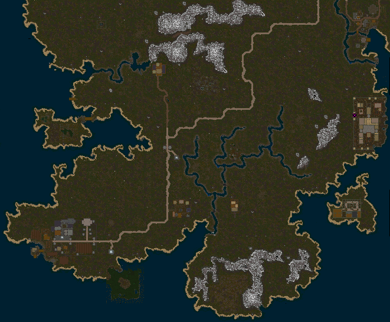

Darkwoods
Whisperdale

Whisperdale Shop Owners
Pub
Farming Shop
Weaponry Shop

Leatherworking Shop
Carpenter Shop
Armory
BlackSmith
Provisioner Shop
Magic Shop
Jewelry Shop
Ship Yard
Whisperdale Town People


Whisperdale Town People of Interest
Plays Demon's Eye
Repeatable Insidious Creatures Quest
Whisperdale Quest NPCs
Quest NPCS
Autumn and Hunting Lodge

Lord Vezryl Estate

Archery Trainers
Whisperdale Quest
Knight of Whisperdale
| Quest Log | Location |
|---|---|
| Darkwoods | Whisperdale |
| Difficulty | Skills |
|---|---|
| Apprentice | Combat |
| NPC Quest Start | Monster | Reward |
|---|---|---|
| Lord Vezryl | Many different creatures |
 ">
">


 ">
">
">
">


|
 Lord Vezryl Greeting! I am Lord Vezryl, of the noble town of Whisperdale. I do not recognize you... However, if you pledge yourself to Whisperdale, I can see about replacing some of that armor you're wearing... You will need something that represents this represents this town well, after all Speak to the steward near the spawn gates in the center of town. He will explain more.
Lord Vezryl Greeting! I am Lord Vezryl, of the noble town of Whisperdale. I do not recognize you... However, if you pledge yourself to Whisperdale, I can see about replacing some of that armor you're wearing... You will need something that represents this represents this town well, after all Speak to the steward near the spawn gates in the center of town. He will explain more.
 Whisperdale Steward: Welcome to Whisperdale, the grand capital of Darkwood Forest and home to the night Elves! I'm so glad you chose Whisperdale to begin your journeys. *He bows with a flourish* I am the humble Steward of Whisperdale. I watch over the city and tend to its needs.
Do you know much about our people? We are the night Elves, also known as the Astari. The city is still...recovering...from the rune War. It's nothing major, but we could use a hand here or there. Therefore, Vezyrl asked me to recruit some visitors to our cause. We can bestow a great gift on you if you decide to help us. 1 extra orb of Dexterity!
*He whispers* You'll be able to obtain 101 orbs in Dexterity. There's really no choice, considering the alternatives... However, once you decide, you cannot change your mind. Choose wisely... Do you wish to align with our city?
Whisperdale Steward: Welcome to Whisperdale, the grand capital of Darkwood Forest and home to the night Elves! I'm so glad you chose Whisperdale to begin your journeys. *He bows with a flourish* I am the humble Steward of Whisperdale. I watch over the city and tend to its needs.
Do you know much about our people? We are the night Elves, also known as the Astari. The city is still...recovering...from the rune War. It's nothing major, but we could use a hand here or there. Therefore, Vezyrl asked me to recruit some visitors to our cause. We can bestow a great gift on you if you decide to help us. 1 extra orb of Dexterity!
*He whispers* You'll be able to obtain 101 orbs in Dexterity. There's really no choice, considering the alternatives... However, once you decide, you cannot change your mind. Choose wisely... Do you wish to align with our city?
Player: Yes!
- You have gained the dexterity of Whisperdale
- You have gained 500 faction with the city of Whisperdale!
- 2,750 Experience Pool experience may very
Lord Vezryl: Greetings! Ah.. A loyal servant of Whisperdale... The times are dire, the forces of evil are threatening our fair city. Lotor and his Knights are doing the best they can, but I fear it is not enough. Forthe future of Whisperdale I need a brave warrior to seek out and slay the foul creatures that plague us.. Are you willing to help?
Player: Whisperdale shall stand forever!
Lord Vezryl: Whisperdale be praised! The task at hand is most dangerous! The nobles and I are convinced that Talazar himself is responsible for the calamitous creatures which haunt our shaded woods! Knowing this, do you still dare stand against this Dark Fiend?
Player: Yes! His evil must be defeated!
Lord Vezryl: Very good! May Whisperdale be saved... It appears you are a ___ adventurer. The task I will give you will test your courage and wisdom. Return to me after Talazar's power has been weakended!
QUEST RECEIVED: Knight of Whisperdale, Lord Vezryl of Whisperdale asks you to slay x amount of Creatures.
Head out and kill the required creatue. You will be updated as you kill them. QUEST UPDATE: Kill x amount more creature for Lord Vezryl of Whisperdale
QUEST UPDATE: Knight of Whisperdale, Return to Lord Vezryl in Whisperdale!
Whisperdale be praised! You have made the elfen lands more secure from the evil plague... Talk to Lady Vezryl at our lodge about further rewards for your service. It is a short journey north from Whisperdale. Thank you again.
You have gained faction with Krog for your heroic work! See Lady Targon of Maraket about a reward.
- You have gained X amount of faction with the city of Whisperdale
- Ramdon Amounts Experience Pool experience may very
 Follow the path north to Lord Vezryl Estate and Speak to Lady Vezryl. Greetings loyal warrior of Vezrl... Honored servant. Here is your reward for your loyal patronage. Continue to serve.
Repeat this quest gaining Faction Points to earn the complete Whisperdale Set.
Follow the path north to Lord Vezryl Estate and Speak to Lady Vezryl. Greetings loyal warrior of Vezrl... Honored servant. Here is your reward for your loyal patronage. Continue to serve.
Repeat this quest gaining Faction Points to earn the complete Whisperdale Set.
- 500 Faction Points Necklace of Whisperdale
- 800 Faction Points Ring of Whisperdale
- 1300 Faction Points Bracers of Whisperdale
- 1800 Faction Points Belt of Whisperdale
- 2300 Faction Points Helm of Whisperdale
- 2800 Faction Points Boots of Whisperdale
- 3300 Faction Points Cloak of Whisperdale
- 3800 Faction Points Guardian of Whisperdale
- 4300 Faction Points Leggings of Whisperdale
- 4800 Faction Points Armor of Whisperdale
Quest Complete
A Shadow Roams the Lands
| Quest Log | Location |
|---|---|
| Darkwoods | Whisperdale |
| Difficulty | Skills |
|---|---|
| Apprentice | Combat |
| NPC Quest Start | Reward |
|---|---|
| Varios |

|
 Speak to Varios: *He stamps his foot impatiently* Hmm...another adventurer. How quaint. And what brings you to Whisperdale? *He cuts you off before you can answer* Hop 'tis not hunting you seek. Undead creatures called shadows stalk our fairest hunting grounds!!
Speak to Varios: *He stamps his foot impatiently* Hmm...another adventurer. How quaint. And what brings you to Whisperdale? *He cuts you off before you can answer* Hop 'tis not hunting you seek. Undead creatures called shadows stalk our fairest hunting grounds!!
Player:Hunting grounds?
Varios: Fair indeed. Lord Vezryl's Estate. T'was fine, shady forest and wooded vale teeming with full fleshed deer. You'd be lucky to take a scrawny doe now, much less a stag. I often daydream that I could again visit...this time of year is just heavenly...
Player: Fear not! I will hunt the scourge!
Varios: Ah, 'tis not I who should be afraid... Journey on the road leading out of this city. Continue north at the fork to Lord Vezryl's Estate. West from there you will find foul apparitions to slake you courage...
br
QUEST RECEIVED: A Shadow Roams the Lands, Eliminate 25 Shadows for Varios of Whisperdale.
 Journey on the road leading out of the city. Continue north at the fork to Lord Vezryl's Estate. West from there you will find foul apparitions to slake you courage.
Once you find them kill 25. You will be updated as you kill them. You've killed 25 Shadows for Varios. Return to Varios for your reward.
Journey on the road leading out of the city. Continue north at the fork to Lord Vezryl's Estate. West from there you will find foul apparitions to slake you courage.
Once you find them kill 25. You will be updated as you kill them. You've killed 25 Shadows for Varios. Return to Varios for your reward.
QUEST UPDATE: A Shadow Roams the Lands, Return to Varios with news of the Shadow extermination!
Varios: Ah, your task is accomplished! A pleasant surprise! I thought perhaps you were another panhandling 'WARRIOR' hoping to squeeze some money from poor Varios. you have proven me wrong! I will soon venture to the lodge. My He is suprised that you accomplished this task. You have proven him wrong. He will soon venture to the lodge to meet his friend Burslord. They have been planning a trip for some time. He thanks you with a trifle of gold. Forgive my manners at our first meeting... You did look quite rough around the edges. I suppose that is what is needed in this age of unrest. Talk to him again for the next quest.
- Gold Received: 2,500
- 27,500 Experience Pool experience may very
Varios can now venture to Lord Vezryl's estate! He paid you handsomely.
Quest Complete
Time for Revenge
| Quest Log | Location |
|---|---|
| Darkwoods | Whisperdale |
| Difficulty | Skills |
|---|---|
| Apprentice | Combat |
| NPC Quest Start | Reward |
|---|---|
| Varios |
|
Speak to Varios: *He sighs* I often of visiting the hunting lodge. Such a glorious place! My friend Burslord and I pass the time in hunting the swapping tales of bravery! Time...indeed... That reminds me, perhaps you would like to help me with another matter?
To the east lies a hive of Termigons. I was helping my friend Burslord to collect some material for a project when their queen fled with my timepiece and buried it among the mounds... I am curious whether you can kill the Termigon Queen and return my timepiece...
Player: I will try to find it.
Varios: That's all we can do is it not? Well then, time's wasting! *He ushers you on your way
QUEST RECEIVED: Time for Revenge, Find the termigon hive, destroy the Queen, reclaim Varios' time piece.
 Head east across the river then south around the mountain. This is the Termigon hive. Find the Termigon Queen
with in this area and kill it. There is a chance you won't find the timepiece when you kill the queen You search the body, but don't find anything.
Head east across the river then south around the mountain. This is the Termigon hive. Find the Termigon Queen
with in this area and kill it. There is a chance you won't find the timepiece when you kill the queen You search the body, but don't find anything.
QUEST UPDATE: Time for Revenge, You found Varios's Timepiece! Return it to him in Whisperdale.
Varios: You found my timepiece! Kuthos be praised! It would be quite rude if there was no compensation for your efforts. You must visit the hunting lodge and speak with my friend Burslord. He is eager to meet you and see if I have been truthful.
- Gold Received: 5,000
- 38,500 Experience Pool experience may very
You havce earned Varios respect and his gold. He commends you to Burslord.
Quest Complete
Termigon Armor
| Quest Log | Location |
|---|---|
| Darkwoods | Hunting lodge |
| Difficulty | Skills |
|---|---|
| Apprentice | Combat |
| NPC Quest Start | Reward |
|---|---|
| Burslord |

|
 Speak to Burslord: Varios in Whisperdale speaks very highly of you. Perhaps you can return to the Termigon hive and do me a service as well. I am working on a new very strong material to be used in the crafting of armor. The material is only found in the stomach lining of some Termigon Warriors around the hive to the south. return to the hive and retrieve 20 stomach linings for my work.
Speak to Burslord: Varios in Whisperdale speaks very highly of you. Perhaps you can return to the Termigon hive and do me a service as well. I am working on a new very strong material to be used in the crafting of armor. The material is only found in the stomach lining of some Termigon Warriors around the hive to the south. return to the hive and retrieve 20 stomach linings for my work.
- OPTION: 1 This sounds too messy....
- OPTION: 2 I am too tired to help...
- OPTION: 3 I am too hungry to assist you right now...
OPTION: 1
Burslord: Nonsense. There is usually nothing in the stomachs! They regurgitate it to their horrid little larval spawn. Oh, what was I saying? Yes... to remove the lining simply cut a small hole in the stomach once you remove it... It falls out in one whole piece. Fascinating, isn't it?
OPTION: 2
Burslord: Traveling does make one weary, doesn't it? Ahhh... It is as if I am living my youthful days again! I remember the exhaustion well... Here. Have some pie. Mother never sent me without it! I will see you back soon with those stomach linings, yes?
- ITEM RECEIVED: Apple Pie Slice

OPTION: 3
Burslord: Well, we can't have you off adventuring on a nempty stomach! *He produces a steaming bowl of beef stew* There now, this should help. I will see you back soon with those stomach linings, yes?
- ITEM RECEIVED: Beef Stew
QUEST RECEIVED: Termigon Armor, Collect 20 stomach linings of Termigon Warriors for Burslord, a huntsmand who lives east of Autumn.
">
Head south back to the Termigon Hive and kill Termigon Warriors. You will need to kill more then 20, becasue of failing to remove the stomach lining.
You try to remove the stomach lining, but it shreds to pieces.. When you have successfully removed a stomach you will be updated. You've collected 20 stomach linings for Burslord!
QUEST UPDATE: Termigon Armor, you've collect enough material. Return to Burslord at the Hunting Lodge.
Burslord: With these Termigon stomach linings I can fashion many pairs of armored glvoes! Take these prototype mittens as a reward for your fine service! Now rest awhile at our fine lodge...
- ITEM RECEIVED: Termigon Battle Mittens
- 44,000 Experience Pool experience may very
Quest Complete
Burslord gave you Termigon Battle Mittens.Correspondence
| Quest Log | Location |
|---|---|
| Darkwoods | Whisperdale |
| Difficulty | Skills |
|---|---|
| Apprentice | Traveling |
| NPC Quest Start | Reward |
|---|---|
| Jarkam |
|
 Speak to Jarkam:, I must get this note to the miner in Fort Eastwatch. Deliver it to him and he will pay you well...
Speak to Jarkam:, I must get this note to the miner in Fort Eastwatch. Deliver it to him and he will pay you well...
Player: Why is it so important?
Jarkam: The ore from Krythan island is superior to that found on our native soil, the Darkwoods. I want to make a deal with the miner to purchase his ore so I can sell it here.
Between you and me, it would not be a small markup. If only i was able to travel there myself... but I cannot. The portal magic is strong and leaves me feeling quite ill.
Player: I will deliver your note for a small markup...
Jarkam: Splendid! Things are going just as planned... Here is your payment do not abuse my trust! Go at once.
- GOLD RECEIVED: 250
Go to the LSP portal, then to Silvest Portal at LSP. Travel all the way to the eastside to Fort Eastwatch. There you will find the Dalvon Miner. Talk to him to give him the note.
Dalvon miner: WHAT? He thinks he can buy my ore at such a low price? If he only knew the problems I have at the mine!
- 16,500 Experience Pool experience may very
Quest Complete
You delivered a note to the Dalvon Miner.Foul Beasts
| Quest Log | Location |
|---|---|
| Darkwoods | Whisperdale |
| Difficulty | Skills |
|---|---|
| Apprentice | Combat |
| NPC Quest Start | Reward |
|---|---|
| Periza |

|
Speak to Periza:, You're new here aren't you? Have you ever heard of Wargs? Foul beasts they are... Several of them came into town and devoured my chickens. If you would be so kind as to venture into the wilderness and extract some
vengeance for me I would be most grateful.
Player: They are MOST foul! I will hunt them.
Periza: MOST foul, indeed. I might have a nice reward waiting for you if you do the job well...
QUEST RECEIVED: Foul Beasts, Wargs near Whisperdale are eating Periza's chickens! Hunt 50 of them..
Speak to her again to get a clue to were you can find the wargs.
Periza: A pack of wargs live in the mountains to the northeast. They come down to feast on my birds when their game is poor. From what I overheard at the tavern; hunters say they prefer the flesh of Brown Bear Cubs. maybe if you kill a few of those, the Wargs will catch scent and show themselves...
">
 Follow the road to the north at the fork head northeast. This area around the south side of the mountain you can find Wargs, and brown bears to kill to get them to spawn more often. As you kill them you will be updated QUEST UPDATE: You've killed 50 wargs for Periza.
Follow the road to the north at the fork head northeast. This area around the south side of the mountain you can find Wargs, and brown bears to kill to get them to spawn more often. As you kill them you will be updated QUEST UPDATE: You've killed 50 wargs for Periza.
QUEST UPDATE: Foul Beasts, Return to Periza in Whisperdale.
Return to Periza;
Periza: I haven't seen a warg around here in ages! You took care of the problem... Here is the reward I promised.
- GOLD RECEIVED: 500 Gold
- ITEM RECEIVED: Warg Eye Amulet
- 11,000 Experience Pool experience may very
Quest Complete
Periza gave you gold and a Warg Eye Amulet for protecting her flock.Search for Jhulara
| Quest Log | Location |
|---|---|
| Darkwoods | Whisperdale |
| Difficulty | Skills |
|---|---|
| Apprentice | Searching |
| NPC Quest Start | Reward |
|---|---|
| Zarowyn | EXP |
If you have spoken to Jhulara you would be doing the Quest A Message for Zarowyn.
Speak to Zarowyn: Places of death, I say. Pah. We must die to find the road to this gate. Where is the joy in that?
Player: places of Death?
Zarowyn: Aye! Places of death! How else to come to the gate but by dying? We wait for loved ones, hoping to see them again, yet hoping against hope that they never make the journey that takes them through the gate. For if we greet them again at the gate, it is only becasue they have died.
And so I watch for my daughter, hoping to hold here again, and hoping that she does not come through that gate for to do so, she must first die.
Player: Your daughter?
Zarowyn: Aye, my child, Jhulara. She set off many days ago. finding her fortune, as all young ones do. I wonder... You look to be a wanderer. Would you... Could you see it fair to be letting me know if you find her in your travels?
Player: Aye, I could do that.
Zarowyn: I thank thee, friend! I will anxiously await news of her, if she is well and happy or otherwise. Have no fear to bring me a bad report. It is better than not knowing.
QUEST RECEIVED: Search for Jhulara, Find Jhulara for Zarowyn of Whisperdale.
 Follow the road east then just north. You will find Autumn. She is right in the middle of town. Speak to her.
Follow the road east then just north. You will find Autumn. She is right in the middle of town. Speak to her.
Jhulara: Greetings! I hope you're well this fine day. *Jhulara smiles kindly at you* Tis a fine day for travelling. Are you on the way to Lord Vezryl's Estate or the hunting lodge? Or perchance to Whisperdale?
Player: Whisperdale
Jhulara: Whisperdale! Indeed! I do wonder how my father doth fare these days. *She looks wistfully south, as though trying to focus on something too far away to see* *You tell Jhulara that her father is looking for her* You've already seen him then? But that's excellent!
Please return to him with news of me, or my good health. I know it will set his mind at rest.
QUEST RECEIVED: Search for Jhulara, Bring good news to Zarowyn of Whisperdale that Jhulara is well.
Follow the road southwest back to Whisperdale and find Zarowyn near the spawn gate.
Player: *You give Zarowyn the message that Jhulara is well and in Autumn*
Zarowyn: You've seen her then? Gods be praised! And she's well! My thanks to you, friend, for this happy news! *Zarowyn shakes your hand and wanders away muttering happily to himself and nodding his head*
- 1,100 Experience Pool experience may very
Quest Complete
You have brought much happiness to Jhulara and ZarowynA Message for Zarowyn
| Quest Log | Location |
|---|---|
| Darkwoods | Autumn |
| Difficulty | Skills |
|---|---|
| Apprentice | Searching |
| NPC Quest Start | Reward |
|---|---|
| Jhulara | EXP |
If you have spoken to Zarowyn you would be doing the Quest Search for Jhulara.
Speak to Jhulara: Greetings! I hope you're well this fine day. *Jhulara smiles kindly at you* Tis a fine day for travelling. Are you on the way to Lord Vezryl's Estate or the hunting lodge? Or perchance to Whisperdale?
Player:
Jhulara: Whisperdale! Indeed! I do wonder how my father doth fare these days. *She looks wistfully south, as though trying to focus on something too far away to see* I would ask you a favor, friend if you are going to Whisperdale,
couldst thou pleas find my father, Zarowyn and tell him that I am here; that I am well? It would do much to ease my heart and also, I think, his. Please give him my message...
Player: Indeed m'lady, I would be happy to assist you.
Jhulara: Thank you, a thousand times over, for this favor you do me!
QUEST RECEIVED: A Message for Zarowyn, Tell Zarowyn of Whisperdale that Jhulara is in Autumn and is doing well.
Follow the road southwest back to Whisperdale. Speak to Zarowyn:
Player: *You give Zarowyn the message that Jhulara is well and in Autumn*
Zarowyn: Jhulara sent you to find me? Gods be praised! And she's well! My thanks to you, friend, for this happy news!
Tis true, it grieved my spirit. Worry never left my mind. Children will never understand the love of a parent until they themselves bring a life into the world. *Zarowyn shakes your hand and wanders away muttering happily to himself and nodding his head*
- 1,155 Experience Pool experience may very
Quest Complete
You have delivered Jhulara's message to her father ZarowynLoyal
| Quest Log | Location |
|---|---|
| Darkwoods | Whisperdale |
| Difficulty | Skills |
|---|---|
| Apprentice | Combat |
| NPC Quest Start | Reward |
|---|---|
| Zerev |

|
Speak to Zerev: Oh, hello... *The boy stares solemnly at you* You do not look like you are from here.
Player: I'm from across the sea.
Zerev: Ho? I wish I could go across the sea... It is so sad here. The ones that die want to stay dead but rise again. The ones taht we want to see again we cannot bring back.
Player: What do you mean?
Zerev: My dog Allie died. She got bit by a black adder, and we couldn't save her. *His lip quivers* Father said we canot pay the mage to resurrect her.
It costs to much and our leather shop does not make good coin. *He bites his lip* So we buried her out in the woods with the other pets. By now she is probably wandering the woods as a skeletal pup. Could you find her? I know she's gone, but I hate to think of her hurting people.
PlayerOf course. I will find the dog.
Zerev: Thank you... Just look for one with a collar. She found something one day digging outside of town, so I hung it on her neck.
QUEST RECEIVED: Loyal, Zerev's dog is now wandering the woods near Whisperdale as a skeletal pup. Put her to rest.
 Venture out of Whisperdale to the northwest near the coast. There is a small random spawn of Skeletal Pups you may have to kill other monsters to get them to spawn. When you start to kill them you will be updated with a message. This Skeletal Pup doesn't have anything on its neck...
When you do kill the correct one you will be updated. QUEST UPDATE: A large totem hangs around this Skeletal Pup's neck. It must be Zerev's dog Allie.
Venture out of Whisperdale to the northwest near the coast. There is a small random spawn of Skeletal Pups you may have to kill other monsters to get them to spawn. When you start to kill them you will be updated with a message. This Skeletal Pup doesn't have anything on its neck...
When you do kill the correct one you will be updated. QUEST UPDATE: A large totem hangs around this Skeletal Pup's neck. It must be Zerev's dog Allie.
QUEST UPDATE: Loyal, You found what was left of Zerev's dog Allie. Return to him in Whisperdale..
Zerev: You did find her, after all... I was hoping you wouldn't, but that thing around her neck - that proves it. You keep it. It reminds me of her too much.
- ITEM RECEIVED: Totem of the Wolf Pup
- 22,000 Experience Pool experience may very
Quest Complete
You found Zerev's dog Allie, resurrected as a Skeletal Pup. He gave you her Totem of the Wolf Pup.The Bane of Whisperdale
| Quest Log | Location |
|---|---|
| Darkwoods | Whisperdale |
| Difficulty | Skills |
|---|---|
| Apprentice | Combat |
| NPC Quest Start | Reward |
|---|---|
| Legrant | "> |
Speak to Legrant, Good day, adventurer. I hope your travels in the Darkwoods are gratifying...
Player: But I am bored of this place...
Legrant: Bored you say? There is trouble enough here to last us a lifetime! I'd gladly leave myself, but I promised Lord Vezryl I would guard this gate. Since they began digging for that cursed crystal, our town has been beset with evil.
Player: Why were they digging for a crystal?
Legrant: We elves had no business digging in the first place!! Our home is in the trees, in beautifully crafted bows and fine things that make no noise when you slip through the woods... I blather on... The crystal is an object of small power...nothing to attract the Rune Warriors to this palce.
However, it could be used to fortify the walls of Whisperdale and bring greater peace to the Darkwoods. We began digging, and unearthed a chamber sealed long ago. perhaps sealed by the founders of this great city! Then the marsh lights followed us... Somehow or other, they found the crystal before us. That is when our troubles began.
Player: Go on...
Legrant: One of the marsh lights must have absorbed the energy from the crystal. It grew in size and power. We call it Baneshine. Many other strange lights can be seen at times - and the most terrible sounds one can imagine! I hope that oneday Lotor will send a great warrior to help us recover the crystal and subdue the evil creatures that have made it their home.
in fact, when I saw you I thought you had potential.
Player: I will explore it!
Legrant: Try to locate the crystal if you can. Lord Vezryl will surely reward you. Here is the key to the trapdoor. You will need it to get in. If you go east from here, there is a small island surrounded by swampy green water. There is a tunnel to get to the island, and another trapdoor. May the gods watch over you!
QUEST RECEIVED: The Bane of Whisperdale, Unsure of what lies ahead, you agree to explore the swampy cave southeast of Whisperdale for Legrant.
When you get in the cave fight your way though Marsh Lights  to Owyn at location number 1 on the map.
to Owyn at location number 1 on the map.
Speak to Owyn: TEEEEK!! ... Oh! It's a real LIVING person! Thank the gods! I thought you were a ghost. What ever are you doing down here? Did Vezryl send you?
Player: Legrant told me about this place.
Owyn: I haven't heard that name in some time. He must have sent you to rescue me! For his information, I do NOT need rescued. I am just, er, well, I'm thoroughly exploring this corner of the dungeon you see.. If we help each other, we might both get what we want, though at this point I've given up on the Crystal.
I'd give anything just to see the cloudy skies above Whisperdale again... I cold really use a bit to eat, I've sitting down here for so very long and I've eaten all of the mushrooms I could find. Some freshly cooked Greely would hit the spot!
QUEST UPDATE: The Bane of Whisperdale, An explorer named Owyn will help you find the crystal. First bring him a cooked Greely.
Cooked Greely "> Can be fished for or bought in a store. Once you have it bring it back to Owyn.
Owyn: I am famished! Do you have the fish?
Player: Yes! Take it!
Owyn: Mmmm...this is really good! Some lemon on here would make it even better... To find the crystal you will need to recover a device I lost. It is like a compass for objects of magic power. I'm sure I must have dropped it while exploring.
QUEST UPDATE: The Bane of Whisperdale, Owyn can help you find the crystal, but first you must recover a device that he dropped while exploring.
">
Go out and kill Gloom Lights. As you kill them you will be updated You didn't find Owyn's Compass. Keep looking! Keep killing them untll you finally get the Quest Update.
QUEST UPDATE: The Bane of Whisperdale, The Gloom Light left behind what looks like a boot. Is this what Owyn planned to use to find the Crystal?
Go back to Owyn to let him know you have his boot.
Oywn: Yes! You've found it! *He takes if from you and puts it on his foot* *He appears quite sad*
Player: What's wrong?
Owyn: I've just remembered... This item works in pairs. Naturally. i've spent so long down here it's all rather fuzzy... but I think my brother has the other boot. We were separated when a big Marsh Light chased us! I went South, and he went East. Once you fin him, you can use both boots to find the Crystal!
QUEST UPDATE: The Bane of Whisperdale, Find Owyn's brother who fled east through the marsh dungeon.
Follow the map east to location number 2 on the map. Coltehn is hidding behind a book shelf. Speak to him to find out about the other boot.
Coltehn: Oh - you're not a scary marsh light! You're just a human! Hmph!
Player: What are you doing here?
Coltehn: My big brother took me into this dungeon. We were going treasure hunting. I got scared when a big Marsh Light chased us. I ran this way to hide, and now I'm lost and too scared to try dying... Please, will you tell my brother Owyn where I am? Maybe he can come help me...
Player: Yes, but first I need a boot.
Coltehn Oh, that boot I dropped when a Great Light chased me? It's a special boot! I was supposed to hold onto it, but I got so scared. My hands were shaking. If you find that Great Light, maybe you can get the boot back. Marsh Lights are drawn to shiny objects. I bet it is playing with it. I can't go back to Owyn without it. He'll be so angry with me.
QUEST UPDATE: The Bane of Whisperdale, Find the Great Light which stole Coltehn's magic boot. Return it to him.
">
Find the Great Light and kill them till you are updated. (Quest fail update is not working as of this) Should say something like You didn't find Coltehn's boot. Keep looking! Keep killing them untll you finally get the Quest Update.
QUEST UPDATE: The Bane of Whisperdale, You found the other boot! Return to Coltehn
Go speak to Coltehn again.
Coltehn: While you were gone, I decided I would try to go back by myself. Watching you makes me feel braver. I think you should keep the boot, since you have the other one. Good luck! once I get out of here, I'm never coming back!
- ITEM RECEIVED: Marsh Soaked Boots
 Kill the monster in the area while you are wearing the Marsh Soaked Boots ">
utill you get a message, A horrible wailing sound fills the dungeon! Baneshine will be found at location 3 on the map. When you kill Baneshine you will receive the Gleaming Crystal ">
Kill the monster in the area while you are wearing the Marsh Soaked Boots ">
utill you get a message, A horrible wailing sound fills the dungeon! Baneshine will be found at location 3 on the map. When you kill Baneshine you will receive the Gleaming Crystal ">
QUEST UPDATE: The Bane of Whisperdale, You recover a gleaming crystal. Bring it to Legrant!
- ITEM RECEIVED: Gleaming Crystal
Return to Legrant.
Legrant: By the gods! You're back - and you have the crystal! Let me see it! I'm amazed. After all these years... Please speak with Lord Vezryl. He will have a reward for you.
Lord Vezryl: Legrant told me of your adventures in the Marsh dungeon. I'm amazed that you were able to recover it! I must reward you. Please, take this magic blade. We had it crafted to fight the monster Baneshine - some good it did us! Thank you, on behalf of all of Whisperdale!
- ITEM RECEIVED: Baneblade
- 10,000 Experience Pool experience may very
Quest Complete
Lord Vezryl Rewarded you with the Baneblade for your help in recovering the Gleaming Crystal!Riddles
| Quest Log | Location |
|---|---|
| Darkwoods | Autumn |
| Difficulty | Skills |
|---|---|
| Apprentice | Searching |
| NPC Quest Start | Reward |
|---|---|
| Rydyl | "> |
 Speak to Rydyl: Hello! Did you see any spiders on the way in? There are a lot of spiders around here. They're creepy! Would you like to hear my riddle?
Speak to Rydyl: Hello! Did you see any spiders on the way in? There are a lot of spiders around here. They're creepy! Would you like to hear my riddle?
Player Please, I'd love to!
Rydyl: Stronger than steel, Lighter than air; Stolen from monsters to make elves fair. What am I? Bring me the answer, and I'll give you a prize! *Rydyl runs away giggling*
QUEST RECEIVED: Riddles, Rydyl of Autumn will give you a prize if you solve his riddle.
The answer to the riddle is Raw Silk.  You can buy from a store or kill the Black Widow Hatchling in the area.
When you take the Raw Silk to Rydyl you must drag and drop the Raw Silk on him. If you talk to him he will tell you the riddle again.
You can buy from a store or kill the Black Widow Hatchling in the area.
When you take the Raw Silk to Rydyl you must drag and drop the Raw Silk on him. If you talk to him he will tell you the riddle again.
Rydyl: You found the key to the riddle! Now you get Rydyl's key lime! *Rydyl tosses you a lime, giggles and runs away*
- ITEM RECEIVED: Lime
Quest Complete
Rydyl gave you limes in exchange for the raw silk. This quest is repeatableNoisy Neighbors
| Quest Log | Location |
|---|---|
| Darkwoods | Autumn |
| Difficulty | Skills |
|---|---|
| Adept | Combat |
| NPC Quest Start | Reward |
|---|---|
| Vesos |

|
 Speak to Vesos: Hail young adventurer! Enjoying your travels in the land of the Astari? Say, if you aren't too busy, can you help a friend of the land? He is an old fisherman human that resides in the Darkwoods. He has told me that he has been haveing trouble fishing lately. It's mostly due to the Lizardman stronghold on the coast. Could you please go to him?
Just follow the coast north from Whisperdale. Go past the Lizardmen until you find a dock. You will find him there. His name is Old Gerald. Please help him.
Speak to Vesos: Hail young adventurer! Enjoying your travels in the land of the Astari? Say, if you aren't too busy, can you help a friend of the land? He is an old fisherman human that resides in the Darkwoods. He has told me that he has been haveing trouble fishing lately. It's mostly due to the Lizardman stronghold on the coast. Could you please go to him?
Just follow the coast north from Whisperdale. Go past the Lizardmen until you find a dock. You will find him there. His name is Old Gerald. Please help him.
QUEST RECEIVED: Noisy Neighbors, Talk to Old Gerald, north of Whisperdale and the Lizardmen.
 Old Gerald is located on the west coast, best way to find him is to follow the road north then head west right be for you get to Vezryl Estate. He is on the dock.
Old Gerald is located on the west coast, best way to find him is to follow the road north then head west right be for you get to Vezryl Estate. He is on the dock.
Old Gerald: Hello sir, or is it Lady? I can't qite tell... Well no matter. Have you come here to fish? Good luck! I haven't had a bite in ages. Those stinking Lizardmen are eating all the fish. I moved to this area to enjoy the peace and quiet.
And now I have to deal with those scale covered Muckstompers. Say, could you go and rough up their dwelling? Scare them out of the place so I can fish again. There should be 5 Lizardmen Totems located down there. I had a chance to go there and deface 10 of them already. I just need help finishing the task.
Player: Consider it done, I hate those lizards too!
Old Gerald: *He slaps you on the back* Hee Hee! Well don't let me keep you waiting. Just head south of here to find their camp.
QUEST RECEIVED: Noisy Neighbors, Deface the remaining 5 Lizardman Totems for Old Gerald.

 Go back to the east then just south across the bridge to the Lizardmans camp. There are lots of Lizard Totems but you have to find the 5 that still need defaceing. The map attached has the coordinates of all 5 totems. When you find one you will be updated QUEST UPDATE: You have defaced one of the five Lizardman Totems for Old Gerald. When you find the final one you will be updated.
Go back to the east then just south across the bridge to the Lizardmans camp. There are lots of Lizard Totems but you have to find the 5 that still need defaceing. The map attached has the coordinates of all 5 totems. When you find one you will be updated QUEST UPDATE: You have defaced one of the five Lizardman Totems for Old Gerald. When you find the final one you will be updated.
QUEST UPDATE: Noisy Neighbors, Return to Old Gerald about the totems.
Old Gerald: Thank you for defaceing those totems! Maybe they will see it as a sign to leave. Then I can finally fish in peace. Take this item as a token of my appreciation!
- ITEM RECEIVED: Worn Guard Halfplate
- 5,500 Experience Pool experience may very
Quest Complete
Gerald can now fish in peace! He gifted you with a Worn Guard Halfplate.Astari Supplies
| Quest Log | Location |
|---|---|
| Darkwoods | Cave Northeast of Autumn |
| Difficulty | Skills |
|---|---|
| Adept | Combat |
| NPC Quest Start | Reward |
|---|---|
| Lord Solfein |

|
You must be an Astari to do this quest. If you are not an Astari the guard will tell you that area is only open to official Astari Guard Personnel.
 The Astari Shelter is located northeast of Autumn. You can follow the road north then east past the last river to the last rock formation to the north. You can also take the land bridge go all the way to the coast then north past the first two rock formations to the thrid one.
When you try to enter the steel door in the next room the guard will say; That area is only open to official Astari Guard Personnel If you want to get in, you'll have to join The Guard.
The Astari Shelter is located northeast of Autumn. You can follow the road north then east past the last river to the last rock formation to the north. You can also take the land bridge go all the way to the coast then north past the first two rock formations to the thrid one.
When you try to enter the steel door in the next room the guard will say; That area is only open to official Astari Guard Personnel If you want to get in, you'll have to join The Guard.
QUEST RECEIVED: Astari Supplies, Talk to Lord Solfein in Autumn to join the Guard.
 Return to Autumn to speak to Lord Solfein: Greetings. Have you come to inquire about the guard position at the underground shelter?
Return to Autumn to speak to Lord Solfein: Greetings. Have you come to inquire about the guard position at the underground shelter?
Player: Yes, I'd like to join the Astari Guard
Lord Solfein: Lord Solfein looks you over. Thank you for volunteering. Here are your commission papers. Return to the shelter, and report to Captain Laulban for your orders. And be careful - you're the fourth new recruit they've asked for this week.
QUEST UPDATE: Astari Supplies, Report to Captain Laulban in the Astari Shelter
 Return to the shelter and speak to Captain Laulban: So, you're the new recruit, eh? Very well.
Return to the shelter and speak to Captain Laulban: So, you're the new recruit, eh? Very well.
Player: What are my duties?
Captain Laulban Your duties here are simple. The supplies and records in these chambers have been stored for the Astari people in case of an emergency, such as a second Rune War.
Our job is to protect them. We've been facing an infestation of poisonous green triddles lately. They come up through a trap door, way in the back of the shelter. Not the one just west of here - that goes down to the sewers. We're not sure where the one in the back leads. The vermin can't get in if the trap door stays closed, but some of these recruits are.. shall we say... forgetful.
So every once in a while the triddles get in and go after the suppies. And evey once in a while, one of the recruits doesn't come back. We have to keep the trap door closed, and that is your first assignment. Follow this corridor to its end. The trap door is in the last room. Exterminate any insects that have come through. Be sure to check the lock on the trap door, and close it if it's open. Then report back to me.
QUEST UPDATE: Astari Supplies, Check the trap door in the supply room
Go out and around to the south of the Captains office all the way to the west to the last door. There should be a few insects running around in the hallway. Spiders, or Green Triddles. Kill them then enter the room and close the trap door in the floor. You will be updated again.
QUEST UPDATE: Astari Supplies, Report to Captain Laulban in the Astari Shelter.
Captain Laulban: I'm glad to see you back in on piece, recruit. What do you have to report?
Player: I found the trapdoor. It was open, so I closed it.
Captain Laulban: Good work. I'm glad to see that you can handle yourself, soldier. I have another assignment for you; Lord Malgoth over in Dunmarrow has asked us to send him certain documents from our files. Apparently, this shelter held the last remaining copy. I sent your predecessor to get them , but like so many others, he never returned. The documents are filed away in a foot chest, in the room just before the one where the triddles are getting in. Go find these papers and bring them to me. But be careful - there may still be some insects about.
Player: Dunmarrow? Where's that?
Captain Laulban: Dunmarrow is an ancient Astari city, beyond the river to the east. They say it survived the ravages of the Rune War because of a blessing from the goddess Ulthien. I'm afraid I don't know the full story. Anyway, Lord Malgoth's request is legitimate if that's what you're concerned about. Now go.
QUEST UPDATE: Astari Supplies, Retrieve the documents from the footchest in the Astari Shelter.
Just like before head around to the south of the Captains office, go west to the second door and search the footchest
 in this room. When you search the document you will be updated. *You search the footlocker but find no documents*
in this room. When you search the document you will be updated. *You search the footlocker but find no documents*
QUEST UPDATE: Astari Supplies, Report back to Captain Laulban.
Captain Laulban: By the scars of Arna! Missing you say? I know what must have happened. As I told you, the recruits we've lost have been disappearing completely. The insects must be dragging them down, through that accursed trap door, to their lair. If I'm to send Lord Malgoth his papers I need a brave and resourceful soldier to go down there and find them. You are the best I've got. Prepare carefully, and feel free to recruit others to help - we don't know what's down there. Find those documents and bring them back to me. Good luck, soldier!
QUEST UPDATE: Astari Supplies, Find the lost documents in the insect lair below the shelter.
 The lair is not a very big location, but you can go the wrong way a few times. If you get lost the map has the location were to go. You will encoutner Spiders, Brown Triddles, Green Triddles, Fireflies, and Termigon Warriors. When you reach the last area you will see a decaying corps.
The lair is not a very big location, but you can go the wrong way a few times. If you get lost the map has the location were to go. You will encoutner Spiders, Brown Triddles, Green Triddles, Fireflies, and Termigon Warriors. When you reach the last area you will see a decaying corps.  Click on it to receive the missing documents.
Click on it to receive the missing documents.
QUEST UPDATE: Astari Supplies, Papers found. Return to Captain Laulban!
Return to Captain Laulban.
Captain Laulban: Excellent work! I'll have a runner carry these to Lord Malgoth in Dunmarrow immediately. I'm astounded by your account of the tunnel complex that lies beneath us. I'll be writing to Lord Solfein, explaining our need for even more new recruits. You, on the other hand, are too important to be wasted on guard duty. Any recruit off the street can guard these supplies. Very few can brave the perils you have faced. Effective immediately, I'm promoting you to Lieutenant and mustering you out of the Astari Guard. With your promotion, you've earned The Sash of the Astari Guard. Wear it proudly! Here is your pay. Thanks again Lieutenant, and good luck!
- GOLD RECEIVED: 500
- ITEM RECEIVED: Sash of the Astari Guard
- 2,200 Experience Pool experience may very
Quest Complete
???Sentimental Value
| Quest Log | Location |
|---|---|
| Darkwoods | Hunting Lodge |
| Difficulty | Skills |
|---|---|
| Adept | Combat |
| NPC Quest Start | Reward |
|---|---|
| Galun |

|
Speak to Galun: Hail and well met.
Player Hail, good sir.
Galun: You look like a 'sturdy' adventurer. Perhaps you could do me a small faovor?
Player: Favor?
Galun: My great-uncle, the honorable Lord Beldan, hasn't been seen for several years. When I last saw him, he was in possession of soemthing of great
sentimental value to me. When he disappeared, he was excavating an old temple near this lodge. I understand the temple is located in the fork of a great river. You should speak with Ursos about it. I believe he has seen it in his travels. Are you interested in helping me?
Player: I'm always up for a challenge
Galun: Good, good. Glad to hear that you are brave. I have to warn you, the temple is rumored to be full of foul beasts. Some of them... *He laughs nervously* ... Of supernatural nature. But of course, who believes rumors these days? The item you are looking for is a great sword with a jewel-encrusted hilt. Return it to me and I will reward you well. Farewell and good luck.
QUEST RECEIVED: Sentimental Value, Locate 2 pieces of Galun's Uncle's lost great sword in the Temple of Malax near Autumn..

 This temple is not to hard to navigate. I have marked the location of the Sea chest where the Gem Encrusted Hilt is located. There are plenty of enemies to fight though Cultist(9), Fighter(19), Skeletal Apprentice(8), Zombie(13), Small Skeleton(5), Shadow(17), Skeletal Warriors(17) Ghost(23). Once you reach the Large Sea Chest
This temple is not to hard to navigate. I have marked the location of the Sea chest where the Gem Encrusted Hilt is located. There are plenty of enemies to fight though Cultist(9), Fighter(19), Skeletal Apprentice(8), Zombie(13), Small Skeleton(5), Shadow(17), Skeletal Warriors(17) Ghost(23). Once you reach the Large Sea Chest  open it to spawn Soul of Beldan(10).
open it to spawn Soul of Beldan(10).
 Kill him and you will be updated. QUEST UPDATE: You have found the gem-encrusted hilt of a broken sword The sharp blade of the sword is located on the 3rd level down. When you find the next Large Sea Chest. Open it to spawn Body of Beldan(10)
Kill him and you will be updated. QUEST UPDATE: You have found the gem-encrusted hilt of a broken sword The sharp blade of the sword is located on the 3rd level down. When you find the next Large Sea Chest. Open it to spawn Body of Beldan(10)
 Kill him and you will be updated. QUEST UPDATE: You have found a very sharp blade from a broken sword.
Kill him and you will be updated. QUEST UPDATE: You have found a very sharp blade from a broken sword.
QUEST RECEIVED: Sentimental Value, Return the pieces of the sword to Galun at the Autumn Hunting Lodge .
Travel back to the Hunting Lodge and speak to Galun. Ah...
Galun: You found it! A pity the sword is shattered. I will take the hilt, as it contains gems of great... ...'sentimental' value to me. As for the blade take it to my personal blacksmith, Sathis in Silvest. He will craft you an item that will be a worthy reward.
QUEST RECEIVED: Sentimental Value, Seek the Blacksmith Sathis in Silvest.
- 5,500 Experience Pool experience may very
Travel to Silvest and speak to Sathis: Good day! I do hope you're fealing better than I. Old bones do not move as swiftly or as surely as those of the young. I still have my craft, though! Fine blades I can craft yet.
Player: I would speak to you about this blade.
Sathis: Ah- Beldan's blade. You found it then. Excellent. *He turns the blade over in his hands mumbling to himself* Yes, yes, still good material. I can do something with this.
Lord Galun gave you this, I assume, and kept the hilt?
Player: He did indeed. He said you could craft something for me as a reward.
Sathis: Excellent. Hold here a bit. I'll be back in two shakes of a dog's tail. *He winks at you and shoffles off* *He returns in a fairly short time and carefully hands you a beautiful dagger*
and here ye be. Thank you for assisting my lord in his quest. May you use the blade in continuing good health, my friend.
- ITEM RECEIVED: Razor Bone Dagger
- 8,250 Experience Pool experience may very
Quest Complete
You received a Razor Bone Dagger from Sathis for assisting Lord GalunAdvanced Ranger Training
| Quest Log | Location |
|---|---|
| Darkwoods | Whisperdale |
| Difficulty | Skills |
|---|---|
| Apprentice | Combat |
| NPC Quest Start | Reward |
|---|---|
| Tilis Oakwoven |

|
 Speak to Tilis Oakwoven: Greetings, traveler. Many come to learn from us elves the secrets of ranged weapons. Are you here to train your eyes and your mind?
Speak to Tilis Oakwoven: Greetings, traveler. Many come to learn from us elves the secrets of ranged weapons. Are you here to train your eyes and your mind?
Player: What do you require of me?
Tilis Oakwoven: I am a great teacher, indeed, but I will recommend you train with my colleagues. Go forth and search for 6 Elven Ranged Trainers.
They are located across the land of Darkwood. Visit Whisperdale, Autumn, Darkwood, and Lord Vezryl's Estate. Return to me once you have completed their training. Perhaps you should start with Silvi Thrushwood. He resides here in fair Whisperdale.
- Short Bow in Whisperdale Sivi Thrushwood
- Long Bow in Vezryl's Estate Ellini Shadevail
- Small Crossbow in Autumn Rigel Underdark
- Large Crossbow in Whisperdale Tvistia Llywenen
- Vine Sling in Autumn Alithian Leafwhisper
- Vine Staff Sling in Vezryl's Estate Tagonis Weatheroot
QUEST RECEIVED: Advanced Ranger Training, Tilis Oakwoven of Whisperdale sent you to search Astari lands for 6 Elven Ranged Trainers.
Return to Tilis Oakwoven: You have learned all the ranged combat skills from the trainers! This armor shall now fit you. Stalk the darkwoods, weave among the oaks. There is strength in staying. Stay strong and aid the night elves. *He salutes you*
- Night Elf Archer Cuirass
- 33,000 Experience Pool experience may very
???
Quest Complete
Steady Hand
| Quest Log | Location |
|---|---|
| Darkwoods | Whisperdale |
| Difficulty | Skills |
|---|---|
| Apprentice | Combat 12 Bows |
| NPC Quest Start | Reward |
|---|---|
| Sivi Thrushwood |


|
Speak to Silvi Thrushwood: I see that Tilis has recommended you for Archery training. *He clears his throat* The best thing to remember when practicing Archery is a steady shot. To achieve this, you must still your nerves. It requires complete mastery of yourself.
I can see you are a bit...jumpy. Perhaps a good battle will help you focus. First, let's outfit you with a new bow. Hunt 50 Dragoons with this Oakwoven Short Bow.
QUEST RECEIVED: Steady Hand, Use the Oakwoven Short Bow to slay 50 Dragoons for Silvi Thrushwood of Whisperdale.
- Oakwoven Short Bow
 Head out the east side of Whisperdale following the road north untill you reach Lord Vezryl Estate. From there head west towards the coast once there go south to find a bridge that leads to the Dragoon Island. Kill 50 Dragoons. You will be updated as you kill them QUEST UPDATE: You have killed 50 Dragoons!
When you have killed all 50 you will be updated to return to Silvi Thrushwood.
Head out the east side of Whisperdale following the road north untill you reach Lord Vezryl Estate. From there head west towards the coast once there go south to find a bridge that leads to the Dragoon Island. Kill 50 Dragoons. You will be updated as you kill them QUEST UPDATE: You have killed 50 Dragoons!
When you have killed all 50 you will be updated to return to Silvi Thrushwood.
QUEST UPDATE: Steady Hand, Return to Silvi Thrushwood in Whisperdale to collect your reward!.
Return to Sivi Thrushwood: You have killed all the Dragoons with the Oakwoven Short Bow? I am honored to be your acquaintance. Were this belt proudly, as befits your accomplishment.
- Night Elf Archer Belt
- 27,500 Experience Pool experience may very
You have completed Silvi Thrushwood's Short Bow Training!
Quest Complete
Stick Jab
| Quest Log | Location |
|---|---|
| Darkwoods | Vezryl's Estate |
| Difficulty | Skills |
|---|---|
| Apprentice | Combat 20 Bows |
| NPC Quest Start | Reward |
|---|---|
| Ellini Shadevail |
 ">
">
|
Speak to Ellini Shadevail: Tilis and I have a bet going... He is very confident in you. *The tall elf examines you closely* Hmm... I just don't understand... *The tall elf mumbles to himself* Let's just get it over with. I will now teach you the ways of the Stick-Jab. Attack with fast attacks, piercing
the enemy with as many holes as possible. A fluid hand is key. You cannot break your concentraton. And I have the PERFECT test for your concentration. Hunt 50 Shadows with this Oakwoven Long Bow. If you pierce them with many holes they will dissipate.
QUEST RECEIVED: Stick Jab, Kill 50 Shadows with the Oakwoven Long Bow for Ellini Shadevail of Vezryl's Lodge.
- Oakwoven Long Bow
Head west of Lord Vezryl's Lodge and kill 50 shadows. As you are killing them you will be updated. QUEST UPDATE: You have killed 50 Shadows! When you have killed all of them you will updated.
QUEST UPDATE: Stick Jab, Return to Ellini Shadevail in Lord Vezryl's Estate to collect your reward!
Return to Ellini Shadevail: Excellent! So splendid. The odds were not looking great for you if I may be truthful. I suppose I have to settle with Tilis later... on... as thanks for ridding us of those horrid Shadows... I have a gift for you.
- Night Elf Archer Boots
- 27,500 Experience Pool experience may very
You have completed Ellini Shadevail's Long Bow Training!
Quest Complete
Slow and Steady
| Quest Log | Location |
|---|---|
| Darkwoods | Autumn |
| Difficulty | Skills |
|---|---|
| Apprentice | Combat 13 Crossbows |
| NPC Quest Start | Reward |
|---|---|
| Rigel Underdark | "> "> |
 Speak to Rigel Underdark: Tilis has done well to send you to me. We could use some good steady hands on the crossbow. Learning to properly fire a crossbow takes diligence and self-discipline. They might attack slower, but with a precise shot, you can do a tremendous amount of damage to perfect your aim, slay a great number of Termigon Workers with this Splinterwood Small Crossbow.
Do not rush... you cannot expect good results from sloppy work.
Speak to Rigel Underdark: Tilis has done well to send you to me. We could use some good steady hands on the crossbow. Learning to properly fire a crossbow takes diligence and self-discipline. They might attack slower, but with a precise shot, you can do a tremendous amount of damage to perfect your aim, slay a great number of Termigon Workers with this Splinterwood Small Crossbow.
Do not rush... you cannot expect good results from sloppy work.
QUEST RECEIVED: Slow and Steady, Using the Splinterwood Small Crossbow, kill 75 Termigon Workers for Rigel Underdark of Autumn.
- Splinterwood Small Crossbow
"> Head east across the land bridge then south around the mountain to find the Termigon Workers. While killing them you will be updated. QUEST UPDATE: You have killed 75 Termigon Workers! When you have killed all of them you will be updated. QUEST UPDATE: Slow and Steady, Return to Rigel underdark in Autumn to collect your reward!
Return to Rigel Underdark: Adventurer! You are back so soon! Hoever, did you manage to complete the task? Never mind. I would love to hear tales of your battles, but I can tell you are in a hurry. Here, take this piece of armor. I hope it inspires a spirit of patience in you.
- Night Elf Archer Cape
- 27,500 Experience Pool experience may very
You have completed Rigel Underdark's Crossbow Training!
Quest Complete
Wait for It
| Quest Log | Location |
|---|---|
| Darkwoods | Whisperdale |
| Difficulty | Skills |
|---|---|
| Apprentice | Combat 20 Crossbows |
| NPC Quest Start | Reward |
|---|---|
| Tvistia Llywenen |


|
Speak to Tvistia Llywenen: Shooting a Large Crossbow takes special talent. Come closer, I'll show you... You load bolt, pull back the string, and hold your fire... Wait... Hold ever so still... ... Then fire the shot! Always aim for a weak part of the armor. You must study your targets well, or risk close combat. Why don't you try? Practice makes perfect... I think Termigon Warriors will
make a good target. Use my Splinterwood Large Crossbow. I know you'll take good care of it.
QUEST RECEIVED: Wait for It, Kill 75 Termigon Warriors with the Splinterwood Large Crossbow for Tvistia Llywenen of Whisperdale.
- Splinterwood Large Crossbow
">
Head out the east gate to Autumn then across the land bridge south around the mountain to find the Termigon Warriors. While killing them you will be updated. QUEST UPDATE: You have killed 75 Termigon Warriors! When you have killed all of them you will be updated.
QUEST UPDATE: Wait for It, Return to Tvistia Llywenen in Whisperdale to collect your reward!
Return to Tvistia Llywenen: Very impressive... you have made remarkable progress with the Large Crossbow! oh, before you go... I have a gift for you. These gloves shall serve you well, fellow archer...
- Night Elf Archer Gloves
- 27,500 Experience Pool experience may very
You have completed Tvistia Llywenen's Large Crossbow Training!
Quest Complete
Loading the Sling
| Quest Log | Location |
|---|---|
| Darkwoods | Autumn |
| Difficulty | Skills |
|---|---|
| Apprentice | Combat 12 Thrown Weapons |
| NPC Quest Start | Reward |
|---|---|
| Alithian Leafwhisper |


|
 Speak to Alithian Leafwhisper: Shhh... We don't need to make a big fuss out of your training. Let's begin. There is a secret I've learned. Wind up, like a whirligig, and flick your wrist at just the right time... *He knocks a pebble off of the top of a stack of pebbles* Did you see it? Quite stealthy, I know. *He wears a smug grin*
It takes some practice to master this trick. Let's see what you can do. The Cultists have always been a nuisance... I just don't know what they're up to... Lurking around and mumbling the way they do... I think they'd be a perfect target. Kill 50 Cultists with this Enchanted Vine Sling.
Speak to Alithian Leafwhisper: Shhh... We don't need to make a big fuss out of your training. Let's begin. There is a secret I've learned. Wind up, like a whirligig, and flick your wrist at just the right time... *He knocks a pebble off of the top of a stack of pebbles* Did you see it? Quite stealthy, I know. *He wears a smug grin*
It takes some practice to master this trick. Let's see what you can do. The Cultists have always been a nuisance... I just don't know what they're up to... Lurking around and mumbling the way they do... I think they'd be a perfect target. Kill 50 Cultists with this Enchanted Vine Sling.
QUEST RECEIVED: Loading the Sling, Test your sling skills by killing 50 Cultists with the Enchanted Vine Sling.
- Enchanted Vine Sling
 Head east of Autumn across the land bridge north east past the rivers south of the northern mountains west of Mnemnon. Kill the Cultists. While killing them you will be updated. QUEST UPDATE: You have killed 50 Cultists! When you have killed all of them you will be updated.
Head east of Autumn across the land bridge north east past the rivers south of the northern mountains west of Mnemnon. Kill the Cultists. While killing them you will be updated. QUEST UPDATE: You have killed 50 Cultists! When you have killed all of them you will be updated.
QUEST UPDATE: Loading the Sling, Return to Alithian Leafwhisper in Autumn.
Return to Alithian Leafwhisper: Where the Cultists a good quarry for you? *He grins slyly* I have a special surprise for you! It will greatly help you in combat, I'm sure.
- Night Elf Archer Helm
- 27,500 Experience Pool experience may very
You have completed Alithian Leafwhisper's Sling Weapons Training!
Quest Complete
Snappy
| Quest Log | Location |
|---|---|
| Darkwoods | Vezryl's Estate |
| Difficulty | Skills |
|---|---|
| Apprentice | Combat 15 Thrown Weapons |
| NPC Quest Start | Reward |
|---|---|
| Tagonis Weatheroot | "> "> |
Speak to Tagonis Weatheroot: You seek my training in the ways of Thrown Weapons? *He mutters under his breath...* I suppose they'll let anyone train these days. Can you gain the skill needed to properly use a staff sling? It's different than a regular sling. Instead of flicking your wrist, you snap your body when you want to release the rock.
Well, if you insist on trying... Take this enchanted Vine Staff Sling. Return to me once you've killed 50 Skeletal Pups with it.
QUEST RECEIVED: Snappy, Tagonis Weatheroot wants you to practice using the Enchanted Vine Staff Sling to hunt 50 Skeletal Pups.
- Enchanted Vine Staff Sling
Head southwest just north of Whisperdale near the coast to find the Skeletal Pups. While killing them you will be updated. QUEST UPDATE: You have killed 50 Skeletal Pups! When you have killed all of them you will be updated.
QUEST UPDATE: Snappy, Return to Tagonis Weatheroot in Lord Vezryl's Estate to complete your training.
Return to Tagonis Weatheroot: I just can't be sure that you aren't exaggerating, but the sling does seem broken in... *He narrows his eyes* I am obligated to bestow upon you a reward. Do take care of it, unlike the rest of your equipment...
- Night Elf Archer Greaves
- 27,500 Experience Pool experience may very
Tagonis hesitantly agreed to complete your Staff Sling Training!
Quest Complete